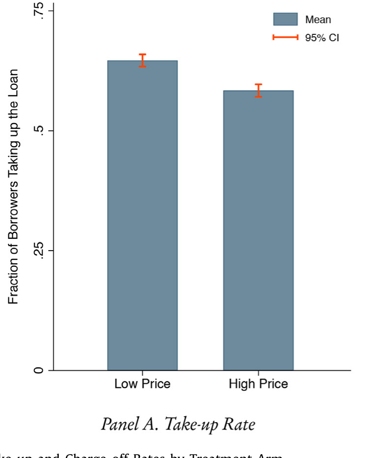
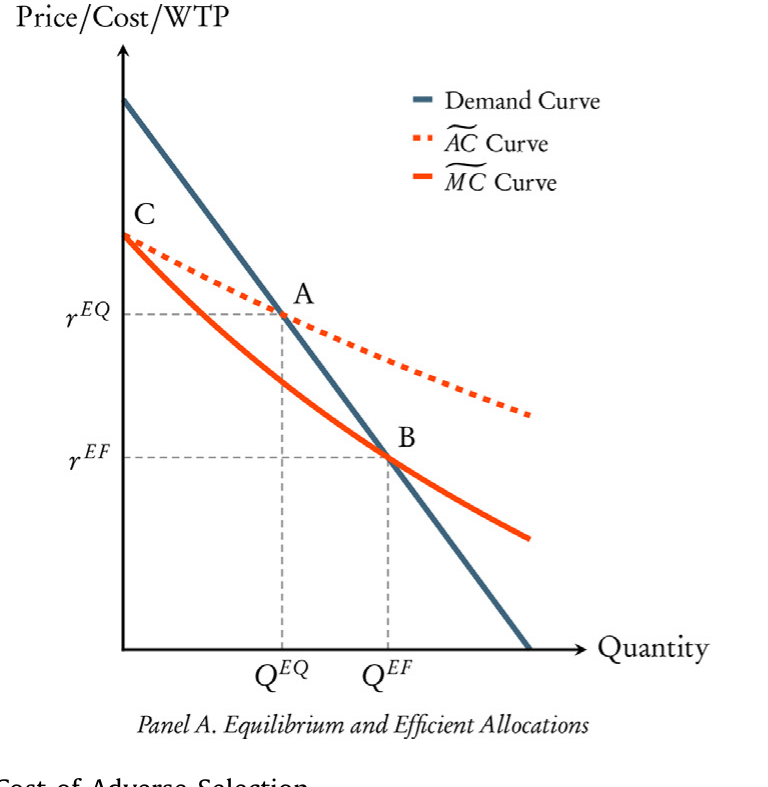
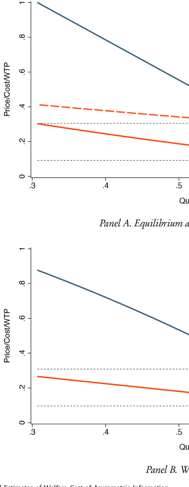
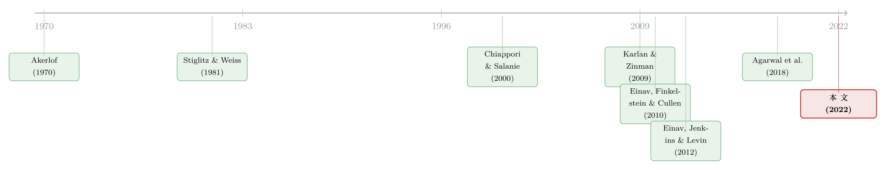

大价格扭曲，小福利损失：一场金融科技实验，给「信息不对称」算了笔账
本文读的是 DeFusco, Tang & Yannelis (2022, JFE)：作者借一家大型金融科技平台的随机降息实验，把保险市场里量「逆向选择福利损失」的方法搬到信贷市场，发现信息不对称把均衡利率从社会最优的约 9% 一路顶到了 30%——价格扭曲极大；可换算成真金白银的无谓损失，却只有每位申请人约 ¥50（$7.20），小得惊人。
1 一个让人不舒服的数字
先抛一个问题：信息不对称（asymmetric information）到底有多贵？
我们都背得出那套理论。Akerlof 笔下的柠檬市场、Stiglitz 和 Weiss 笔下的信贷配给，告诉我们一件事——当借款人比放贷人更清楚自己会不会违约，市场就会失灵：要么利率被顶得过高，要么信贷供给被压得过低，严重时甚至整个市场崩盘。这套逻辑统治了金融学教科书五十年。
但这里有一个尴尬：理论说「会有损失」，可这损失到底是多少？是 GDP 级别的灾难，还是一杯咖啡的钱？长期以来，我们有大量证据证明逆向选择「存在」，却几乎没有可信的估计告诉我们它「值多少钱」。
DeFusco、Tang 和 Yannelis 这篇论文，正是冲着这个空白来的。他们的答案听上去自相矛盾，却恰恰是全文最有意思的地方：信息不对称制造了一个巨大的价格扭曲，却只带来一个很小的福利损失。
价格扭曲有多大？他们估计，在这个市场里，竞争均衡下的年化利率约为 30%，而一个追求总剩余最大化的社会计划者，会把利率定在区区 9% 左右。整整 21 个百分点的楔子（wedge），全是信息不对称撑起来的。
可福利损失有多小？每位贷款申请人平均只损失了约相当于贷款金额 0.8% 的无谓损失——折算下来是 ¥50，也就是 $7.20。一杯星巴克。
一个 21 个百分点的价格扭曲，最后只值一杯咖啡。这怎么可能？要讲清楚这个反转，得先看他们手里那张别人没有的牌。
2 一场难得的「随机降息」
研究信息不对称的福利成本，最大的拦路虎是内生性：利率不是天上掉下来的，它和借款人的风险是缠在一起的。你看到「高利率的人违约率也高」，没法分清这是逆向选择（高风险的人自己选了高利率），还是道德风险（高利率逼着人违约），更没法把它和「平台本来就给高风险的人定高价」区分开。
这篇论文的关键资产，是一场随机实验（randomized experiment）。
2018 年第一季度，一家在中国运营的大型在线借贷平台，从已获批授信的申请人里随机抽出约 11,000 人,把他们对半分成两组：控制组拿到平台的标准融资条款，而处理组（treatment group）拿到的借款成本被砍掉了大约 40%。换句话说，同样一批人、同样的风险画像，仅仅因为一次抛硬币，就面对了截然不同的利率。
为什么是中国的金融科技市场？作者给了三个理由：fintech 放贷年头短，平台信息劣势可能更大，逆向选择/道德风险更突出；中国是全球最大的 fintech 信贷市场，2017 年峰值存量贷款超过 $210 billion，占全球一半以上；以及，与具体平台的合作让他们能干净地识别信息不对称。（关于中国 fintech 怎样把「看不见的人」拉进信贷网络，可参见《一辆共享单车，如何让1亿人「被看见」？》。）
有了这次外生的利率变动，作者就能直接观察两件事随利率怎么动：借款人的接受率（take-up），和拿了贷款之后的核销率（charge-off rate，即违约损失）。
结果很干净。基线设定下：利率每上升 10 个百分点，申请人的接受率下降约 4.3 个百分点，而借款人的核销率上升约 1 个百分点。
后面这一条，是信息不对称的「指纹」。注意，利率是随机给的，所以利率本身不该和一个人的「类型」相关。可一旦给了更高的利率，真正愿意接下这笔贷款的人，平均违约率反而更高了——这说明高利率筛出（select）的，恰恰是那批更可能赖账的人。这就是逆向选择在数据里现身的样子。

Figure 2: Mean Take-up and Charge-offRates by Treatment Arm
3 把保险市场的尺子，借来量信贷
接着，一个自然的问题是：知道了「存在」逆向选择，怎么把它翻译成「福利损失多少钱」？
这一步，作者借的是保险市场的方法论。Einav、Finkelstein 和 Cullen (2010) 那篇经典论文给出过一个漂亮的洞见：在一个信息不对称的市场里，制造无效率的核心力量，是厂商的边际成本随价格上升而上升。在保险里，愿意付更高保费的人往往风险更高；在信贷里，愿意接受更高利率的人往往违约率更高。无论根源是逆向选择还是道德风险，结果都一样——价格和边际成本被死死绑在一起。
而厂商没法按每个人的边际成本单独定价（它只能挂一个统一利率），于是它只能让「卖出这笔贷款的预期收益」去等于「选择进来这一池借款人的平均成本」。于是均衡价格被顶高，数量被压低。
Einav et al. (2010) 证明了一件极美的事：由此产生的福利损失，只由需求曲线和厂商的平均、边际成本曲线的斜率唯一决定。这几条曲线，就是福利损失的充分统计量（sufficient statistics）。而这几条曲线，恰恰可以用「价格的外生变动如何撬动需求与成本」估出来——这正是那场随机实验能给的东西。
这套思路与同样把「信息」翻译成福利数字的研究是近亲。关于数据/信息精度如何改变信贷市场福利分配，可参见《数据让定价更准，谁的钱包先变薄？》；关于 fintech 入场对信贷市场竞争与福利的影响，可参见《监督做得更差，却照样抢走你的客户》。
但真正关键的一步，是作者指出：信贷市场和保险市场有一个本质区别，照搬会出错。
4 模型：为什么「需求曲线」量不准支付意愿
这是全文方法论的核心，值得一步步拆开。
设定。 一群潜在借款人，面对放贷人发来的「要么接受、要么走人」的贷款 offer。贷款金额固定为 \(L\)，放贷人选一个利率 \(r\)。借款人 \(i\) 的特征记为 \(X_i\)，违约概率为 \(\delta(X_i)\)，违约时被核销的本金比例为 \(\theta(X_i)\)。令 \(\rho(X_i)\) 表示借款人 \(i\) 愿意接受的最高利率。于是总需求就是所有「保留利率不低于 \(r\)」的人之和：
$$ D(r) = \int \mathbf{1}(\rho(X) \ge r)\, dF(X). $$
供给与均衡。 \(N \ge 2\) 个同质、风险中性的放贷人做 Bertrand 竞争，均衡时人人零利润。单个放贷人的预期利润为
$$ \Pi_j = N\,L \times \int \big( r - \delta(X)\theta(X)(1+r) - c \big)\, \mathbf{1}(\rho(X) \ge r)\, dF(X) = 0, $$
其中 \(c\) 是不随借款人变化的放贷成本（资金成本、获客成本，按贷款金额的比例计）。令 \(c(X_i) = c + \delta(X_i)\theta(X_i)\) 表示对借款人 \(i\) 放贷的预期每元成本。于是平均成本曲线为
$$ AC(r) = \frac{1}{D(r)}\int c(X)\, \mathbf{1}(\rho(X)\ge r)\, dF(X) = \mathbb{E}\big[\, c(X)\mid \rho(X)\ge r\,\big]. $$
它的灵魂在于：这条平均成本完全由「内生选择进来」的那批人的特征决定。边际成本曲线则是再压低一点价格、把边缘借款人吸进来时总成本的变化：
$$ MC(r) = \frac{\partial TC(r)}{\partial D(r)} = \mathbb{E}\big[\, c(X)\mid \rho(X)= r\,\big]. $$
当愿意接受更高利率的人违约成本也更高时，边际成本随利率递增——这就是「市场被逆向选择」的精确定义。
到这里都还是 Einav et al. (2010) 的框架。真正的新意，在下面这一步。 在保险市场，消费者付的保费在不确定性兑现之前就是「沉没」的——交了就是交了。可在信贷市场不是：借款人可以违约，最后实际付的，往往少于那个被报出来的利率。
这意味着，需求曲线 \(D(r)\) 捕捉的是「借款人愿意接受的最高报价利率」，它不等于借款人事前的支付意愿（willingness to pay, WTP）。因为一个预期自己会违约的人，心里清楚自己不必付满那个报价。要量真实的 WTP，必须把需求曲线向下调整。调整多少？作者用货币度量效用（money-metric utility）写出了借款人事前的支付意愿：
这个式子是全文的枢纽。它说：真实支付意愿 = 报价利率 × (1 − 预期核销率) × 贷款额。而那个「预期核销率」\(\delta(X)\theta(X)\)，恰好就是边际成本里减去固定成本 \(c\) 之后的那一块。换句话说——
用边际成本曲线把需求曲线向下「缩放」，就得到了支付意愿曲线。 直觉极其干净：多服务一个边缘借款人的增量成本，正好等于他的预期核销率；而他的预期核销率，正好等于他报价利息里「不打算付」的那部分。两者天然相等。
有了需求、边际成本、支付意愿三条曲线，效率利率和无谓损失就都能算了。社会最优利率不由「需求 = 平均成本」决定，而由「支付意愿 = 边际成本」决定。

Figure 1: Welfare Cost of Adverse Selection
作者还多走了一步、把道德风险（moral hazard）也纳进来：他们证明，在同时存在逆向选择和道德风险时，这套方法给出的是总福利损失的一个上界（upper bound）。原因是，道德风险下降价不仅吸引边缘借款人，还会降低所有「边际内」借款人的违约率，于是边际成本被高估、WTP 被高估、损失被高估。上界虽不如点估计精确，但对「干预政策能挽回多少」依然是有信息量的。
5 主要结果：大扭曲，小损失
现在回到那个反转。
用实验数据把曲线估出来后，作者发现：竞争均衡利率约 30%（年化），刚好落在两个实验组平均利率的中间；而社会最优利率只有约 9%。价格扭曲不可谓不大。
可福利损失为什么这么小？答案藏在一个词里——需求缺乏弹性（demand is relatively inelastic）。
按估出来的需求曲线，面对 30% 高均衡利率的借款人，相比面对 9% 低效率利率，接受贷款的概率只低了约 10 个百分点。也就是说，巨大的价格扭曲，只换来一个相对很小的数量扭曲。而福利损失（那块著名的 Harberger 三角）取决于数量扭曲的大小，不是价格扭曲的大小。价格涨了一大截，可没几个人因此被赶出市场，那么被错配掉的总剩余自然就有限。
落到数字上：每位申请人的无谓损失约等于典型贷款金额的 0.8%，即 ¥50（$7.20）。如果存在道德风险，这还是个上界，真实损失只会更小。

Figure 3: Empirical Estimates of Welfare Cost of Asymmetric Information
不过故事还没完——平均数掩盖了异质性。作者按申请人被分配的信用评级拆样本，发现一个耐人寻味的结构：高、低信用分人群的需求对利率同样敏感，但接受贷款者的平均核销率，对低信用分人群要敏感得多。 这意味着对「可观察到的更高风险」借款人，利率对放贷成本的影响更大，逆向选择的福利损失也更大。结果印证了这一点：低信用分群体的福利损失约是高信用分群体的 4 倍、是合并样本的 2 倍。但即便如此，绝对值也不过 ¥100（$14.40）每人。
这个「大价格扭曲、小福利损失」的组合，对政策有直接含义：在这个市场，单凭「缓解信息不对称」很难强力论证利率补贴、贷款担保或扩大债权人追索权的正当性——因为可挽回的福利本就不多。这一点值得任何热衷于「为普惠金融加补贴」的讨论引以为戒。这一发现与「banks 对低信用分借款人的边际利润下降更快」（Agarwal et al., 2018）是同一枚硬币的两面。
6 文献脉络
把这篇论文放进它的家谱里看，会更清楚它的位置。
最上游是信息经济学的三块基石：Akerlof (1970) 的柠檬市场、Jaffee & Russell (1976) 与 Stiglitz & Weiss (1981) 的信贷配给——它们告诉我们信息不对称「会」让信贷市场失灵。接着，是一条把「存在性」做实的实证线：Chiappori & Salanie (2000) 提出在保险市场检验信息不对称的范式；Karlan & Zinman (2009) 用一场消费信贷田野实验，干净地把逆向选择和道德风险「看见」；Adams、Einav & Levin (2009) 在次级车贷里、Einav、Jenkins & Levin (2012) 在消费信贷合约定价里继续推进。

然后，真正给本文方法奠基的，是 Einav、Finkelstein & Cullen (2010)：他们在健康保险市场里证明，价格的外生变动足以测出逆向选择的福利损失，并把它归结为几条曲线的斜率。Einav & Finkelstein (2011) 把这套「用图说话」的方法做了综述，Einav、Finkelstein & Mahoney (2021) 则明确点出信贷市场的特殊性——价格不沉没。
本文 (DeFusco, Tang & Yannelis, 2022) 站在这条线的交汇处：它第一个把 Einav et al. (2010) 的方法系统地搬到信贷市场，并显式处理了「报价利率不沉没」这一信贷特性对均衡定价条件和消费者剩余度量的双重修正——既给出了点估计的福利损失，也在道德风险下给出了上界。它和 Agarwal et al. (2018) 关于「低信用分借款人边际利润下降更快」的发现遥相呼应。
7 评论与延伸（Q&A + 研究方向）
(a) 几个可能的疑问
Q：既然只是把保险市场的方法搬过来，新意究竟在哪？
在「价格不沉没」这一条。保险里保费交了就沉没，需求曲线本身就是支付意愿；信贷里借款人会违约、实际不付满报价，所以需求曲线系统性高估了事前支付意愿。本文证明：需要用边际成本曲线把需求向下缩放才能得到 WTP，并据此修正了均衡定价条件（应令预期收益而非报价利率等于平均成本）。这是把框架真正「信贷化」的一步。
Q：「大价格扭曲、小福利损失」会不会只是这个样本的特例？
完全可能，作者也很诚实地承认了这点。结论靠的是「需求相对缺乏弹性」——在这个 fintech 短期消费贷市场，借款人也许缺乏替代渠道、议价能力弱，所以利率涨了也照借。换成有大量替代品的市场（如有银行、信用卡竞争的成熟市场），需求弹性更大，同样的价格扭曲可能对应大得多的数量扭曲和福利损失。本文的贡献是给出方法和一个干净的基准，而非一个普适的「损失很小」结论。
Q：逆向选择和道德风险，这套方法分得开吗？
分不开，但作者把这变成了优点。基线模型只含逆向选择，能得到点估计；一旦掺入道德风险，同一套数据得到的就是总福利损失的上界。所以即使两种力量纠缠不清，结论「损失很小」依然成立——因为连上界都很小。
Q：30% vs 9% 的利率差这么大，会不会是估计噪声？
价格扭曲大恰恰是逆向选择强的体现，与「核销率对利率高度敏感」的直接证据一致，二者是自洽的。真正的不确定性在效率利率
9%这个点估计上——它依赖支付意愿曲线的外推，而实验只在两个利率点上有数据，中间和两端要靠函数形式假设去连。所以福利损失的水平值比「损失相对很小」这个定性结论更脆弱。
Q：随机实验只动了利率，为什么能识别出整条需求和成本曲线？
严格说不能识别「整条」，只能识别两个利率点之间的局部斜率，再靠参数假设（线性/特定函数形式）把曲线补全。这是这类「充分统计量」方法共同的软肋：充分统计量是局部的，外推到实验范围之外（尤其是远低于两组利率的
9%）时，结论对函数形式敏感。
Q：对低信用分人群损失是 4 倍，是不是意味着该给他们补贴？
不能直接这么跳。损失更大确实说明该群体的信息不对称更严重，但绝对值仍只有
¥100，本身不足以支撑强干预。而且补贴会改变借款人的违约激励（道德风险），可能把成本曲线整体抬高。本文的政策含义是审慎的：信息不对称不是这个市场最值得花钱去修的毛病。
(b) 几个可能的研究问题与提案
1. 把这套方法搬到公司债一级市场。 【经济故事】公司债发行同样存在「报价票息不沉没」（可违约、可重组）的特性，发行人比投资者更了解自身信用。能否用某种外生的定价变动（如评级机构方法论变更、指数纳入规则的断点）去估出投资者需求与承销/违约成本曲线，量出公司债市场里信息不对称的福利损失？ 【可行性】中。识别是难点——很难找到公司债发行利率的「随机实验」；可考虑指数纳入断点（如 BBB/BB 边界）或评级迁移作为准外生变动。数据可用（TRACE、Mergent FISD），但 WTP 的外推同样脆弱。
2. 外资持有人是否改变了信贷市场的逆向选择强度？ 【经济故事】外资投资者往往信息劣势更大（地理、语言、制度距离），按本文逻辑，他们参与的信贷/债券市场边际成本曲线可能更陡、价格扭曲更大。一个自然的问题：外资份额上升，是加剧还是缓解了某一信用市场的逆向选择福利损失？ 【可行性】中。可用美国公司债外资持有数据（TIC、Lipper/Morningstar 持有人结构）做横截面/面板，识别要借助外生的资本流冲击（如指数再平衡、母国货币政策）。挑战是把「持有人构成」与「逆向选择强度」干净分离，doable 但识别需精心设计。
3. 二级市场流动性会反过来压低一级市场的信息不对称损失吗？ 【经济故事】如果借款人/发行人知道债权可以被低成本转手，逆向选择的定价后果可能被稀释。把本文的「报价不沉没」洞见再推一步：当债权可交易时，均衡定价条件该怎么改写？流动性溢价是否部分抵消了逆向选择楔子？ 【可行性】低到中。理论部分 doable（扩展本文模型，加入二级市场转让）；实证识别流动性的外生变动很难，可借助做市商资产负债表冲击或监管引发的流动性断点作为工具。
4. 用同一框架比较「人评 vs 机器评分」放贷的福利损失。 【经济故事】fintech 的卖点是用另类数据和机器学习缩小信息劣势。若能在同一平台内找到「评分模型升级」的断点或 A/B 实验，就能用本文方法估出：更好的筛选技术，到底把逆向选择的福利损失压低了多少？ 【可行性】中到高（如能拿到平台内部实验数据）。这是对本文最自然的延伸，识别清晰、政策含义直接；瓶颈在数据获取——需要与平台合作拿到模型迭代前后的随机化样本。
5. 道德风险占比的「拆分」。 【经济故事】本文给的是逆向选择 + 道德风险的合并上界。能否设计一个二维实验——既随机利率、又随机某个只影响事后努力（不影响事前选择）的合约条款（如还款提醒、宽限期），从而把两种力量分别识别出来？ 【可行性】中。理论上 doable（需要一个能切断「事前选择」通道的处理），现实中要说服平台做双臂随机实验，成本不低，但科学价值很高。
8 我的判断与参考文献
贡献。 这篇论文最漂亮的地方，不是那个「¥50」的数字，而是它把一个被讲了五十年的定性命题，第一次在信贷市场里变成了可测、可比较、有充分统计量的定量命题。尤其是「报价利率不沉没」那一步修正，看似技术性，实则点中了「为什么不能照搬保险方法」的要害——它会同时改变均衡定价条件和消费者剩余的度量，错一步则全盘皆错。把它显式补上，是真正的方法论贡献。
对识别的担忧。 我最不踏实的是效率利率 9% 这个点估计。实验只在两个利率点上有数据，而 9% 远在两个处理组利率之下，靠的是支付意愿曲线向低利率端的外推——这一段对函数形式假设高度敏感。所以「损失相对价格扭曲很小」这个定性结论我相信（它由需求的低弹性直接撑着），但福利损失的绝对水平（¥50 还是 ¥150）我会打个问号。此外，结论的外部有效性受限于这个特定市场：短期、小额、缺替代渠道、需求极不弹性——换个市场，弹性一变，结论可能翻转。
后续想看到什么。 我最想看到的，是把这把尺子拿去量更多市场，画出一张「逆向选择福利损失的横截面地图」：哪些信贷市场损失大、哪些小，是什么（替代渠道、需求弹性、技术）在决定它。本文谦逊地把自己定位为一个方法演示和一个基准，这个定位是诚实且正确的——它的价值，要等后人用同一把尺子量出第二个、第三个数字之后，才会完全兑现。
参考文献
Adams, W., Einav, L., Levin, J. (2009). Liquidity constraints and imperfect information in subprime lending. American Economic Review 99(1), 49–84.
Agarwal, S., Chomsisengphet, S., Mahoney, N., Stroebel, J. (2018). Do banks pass through credit expansions to consumers who want to borrow? Quarterly Journal of Economics 133(1), 129–190.
Akerlof, G.A. (1970). The market for "lemons": quality uncertainty and the market mechanism. Quarterly Journal of Economics 84(3), 488–500.
Chiappori, P.-A., Salanie, B. (2000). Testing for asymmetric information in insurance markets. Journal of Political Economy 108(1), 56–78.
DeFusco, A.A., Tang, H., Yannelis, C. (2022). Measuring the welfare cost of asymmetric information in consumer credit markets. Journal of Financial Economics 146(3), 821–840.
Einav, L., Finkelstein, A. (2011). Selection in insurance markets: theory and empirics in pictures. Journal of Economic Perspectives 25(1), 115–138.
Einav, L., Finkelstein, A., Cullen, M.R. (2010). Estimating welfare in insurance markets using variation in prices. Quarterly Journal of Economics 125(3), 877–921.
Einav, L., Finkelstein, A., Mahoney, N. (2021). The IO of selection markets. NBER Working Paper No. 29039.
Einav, L., Jenkins, M., Levin, J. (2012). Contract pricing in consumer credit markets. Econometrica 80(4), 1387–1432.
Jaffee, D.M., Russell, T. (1976). Imperfect information, uncertainty, and credit rationing. Quarterly Journal of Economics 90(4), 651–666.
Karlan, D., Zinman, J. (2009). Observing the unobservables: identifying information asymmetries with a consumer credit field experiment. Econometrica 77(6), 1993–2008.
Stiglitz, J.E., Weiss, A. (1981). Credit rationing in markets with imperfect information. American Economic Review 71(3), 393–410.